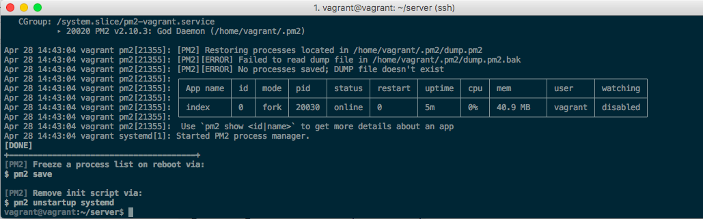
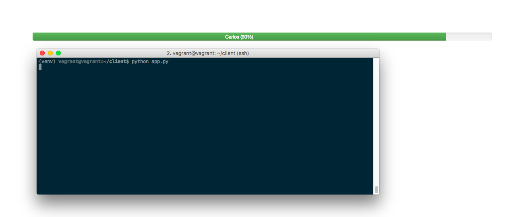

En este tutorial vamos a crear una sencilla aplicacion que mostrará una barra de progreso cuando una tarea en segundo plano se encuentra ejecutandose. Para comenzar vamos a crear un servidor socket.io con la ayuda NodeJS, NGINX y PM2, el cliente lo desarrollaremos en PHP y Javascript, ademas de utilizar Python para enviar los estados de la barra de progreso.
Como es costumbre en mis tutoriales, utilizo un ambiente de desarrollo lo mas parecido a produccion con ayuda de Vagrant y VirtualBox, si deseas saber como crear un ambiente de desarrollo visita este link. Comenzaremos instalando NodeJS de forma global utilizando el metodo de Marco Minetti
vagrant@vagrant:~$ sudo -i
root@vagrant:~# apt-get -y install gcc make curl git python python-dev libssl-dev build-essential
root@vagrant:~# curl https://raw.githubusercontent.com/creationix/nvm/v0.30.1/install.sh | NVM_DIR=/usr/local/nvm PROFILE=/etc/bash.bashrc bash
root@vagrant:~# source ~/.bashrc
root@vagrant:~# nvm install stable
root@vagrant:~# nvm alias default stable
root@vagrant:~# echo "#\!/bin/bash
export NVM_DIR=\"/usr/local/nvm\"
[ -s \"\$NVM_DIR/nvm.sh\" ] && . \"\$NVM_DIR/nvm.sh\"
node \$@" > /usr/local/bin/node
chmod +x /usr/local/bin/node
root@vagrant:~# echo "#\!/bin/bash
export NVM_DIR=\"/usr/local/nvm\"
[ -s \"\$NVM_DIR/nvm.sh\" ] && . \"\$NVM_DIR/nvm.sh\"
npm \$@" > /usr/local/bin/npm
chmod +x /usr/local/bin/npm
root@vagrant:~# exit
vagrant@vagrant:~$ node -v
v10.0.0
vagrant@vagrant:~$ npm -v
5.6.0
En estas instrucciones estoy incluyendo el prompt bash para distinguir cuando estamos como usuario vagrant y como super usuario.
Para poder instalar un paquete global, debemos de entrar como super usuario e instalar el paqute con npm install -g o utilizar sudo npm install -g , todos los paquetes globales estarán disponibles para cualquier usuario agregando esta linea al final del archivo /etc/profile
export PATH=$PATH:/usr/local/nvm/versions/node/v10.0.0/bin
La ruta va a depender de la version de NodeJS instalada
Ahora ya tenemos listo nodejs y npm, vamos comenzar nuestro proyecto nodejs en la carpeta que tu desees con el usuario vagrant, en mi caso la carpeta se llama server en home de vagrant.
vagrant@vagrant:~/server$ npm init --yes
El resultado se muestra en pantalla
{
"name": "server",
"version": "1.0.0",
"description": "",
"main": "index.js",
"scripts": {
"test": "echo \"Error: no test specified\" && exit 1"
},
"keywords": [],
"author": "",
"license": "ISC"
}
Ahora instalaremos solo dos paquetes
vagrant@vagrant:~/server$ npm install express socketio --save
Con el editor de textos vim voy a crear un archivo llamado index.js y colocar el siguiente codigo
var app = require('express')();
var http = require('http').Server(app);
var io = require('socket.io')(http);
io.on('connection', function (socket){
socket.on('bar', function (msg) {
socket.broadcast.emit('bar', msg);
});
socket.on('progress', function (data) {
socket.broadcast.emit('progress', data);
});
});
http.listen(3001, function () {
console.log('listening on *:3001');
});
En este codigo estoy creando dos canales bar y progress, el primero se encargará de mostrar u ocultar la barra de progreso, y la segunda se encargará de enviar el valor actual del progreso.
Probamos si nuestro codigo esta funcionando
vagrant@vagrant:~/server$ node index.js
deben ver el mensaje de log listening on *:3001
Bien, ahora dejaremos este proceso como servicio que se ejecutará siempre que se encuentre encendido nuestro servidor y sirviendo como punto de entrada NGINX.
Lo primero que haremos será instalar el paquete PM2 global
vagrant@vagrant:~/server$ sudo npm install -g pm2
Ahora iniciamos nuestro pequeño programa con PM2
vagrant@vagrant:~/server$ pm2 start index.js
Y generamos la instruccion del servicio
vagrant@vagrant:~/server$ pm2 startup systemd
Nos mostrará en la pantalla la instruccion que debemos ejecutar para crear el servicio en systemd, es algo parecido a esto
sudo env PATH=$PATH:/usr/local/nvm/versions/node/v10.0.0/bin /usr/local/nvm/versions/node/v10.0.0/lib/node_modules/pm2/bin/pm2 startup systemd -u vagrant --hp /home/vagrant
El resultado despues de ejecutar esta instruccion se vera como la imagen

De esta forma ya tenemos instalado nuestro servicio que se ejecutará cada vez que iniciemos nuestro servidor, en este caso estamos en desarrollo, pero tambien sirve para produccion, es lo grandioso de trabajar con vagrant y virtualbox.
Podemos comprobar si efectivamente está ejecutandose el programa con estas instrucciones
vagrant@vagrant:~$ pm2 monit
o verificando los puertos abiertos, acuerdense que nuestra aplicacion esta corriendo en el puerto 3001
vagrant@vagrant:~$ netstat -pantl | grep 3001
Bien, ahora vamos a instalar nginx que nos va a servir como proxy hacia nuestro socket.
vagrant@vagrant:~$ sudo apt install nginx
Si checamos los puertos abiertos buscando el puerto 80, comprobaremos si el servicio NGINX se levantó correctamente
vagrant@vagrant:~$ netstat -pantl | grep 80
Ahora agregaremos el virtualhost en NGINX que servirá de entrada a nuestra aplicacion de nodejs, para ello nos dirigimos a la carpeta /etc/nginx/sites-available, aqui solo encontrarás un archivo que contiene la configuracion por defecto de el servidor web.
Vamos a crear con permisos de superusuario un archivo llamado socketio
vagrant@vagrant:/etc/nginx/sites-available$ sudo vim socketio
y dentro colocaremos la configuracion siguiente
upstream socket_nodejs_upstream {
server 127.0.0.1:3001;
keepalive 64;
}
server {
access_log /var/log/nginx/socketio_access.log;
error_log /var/log/nginx/socketio_error.log;
server_name socket.localdomain.lan;
location / {
proxy_set_header X-Forwarded-For $proxy_add_x_forwarded_for;
proxy_set_header Host $http_host;
proxy_set_header X-NginX-Proxy true;
proxy_http_version 1.1;
proxy_set_header Upgrade $http_upgrade;
proxy_set_header Connection "upgrade";
proxy_max_temp_file_size 0;
proxy_pass http://socket_nodejs_upstream/;
proxy_redirect off;
proxy_read_timeout 240s;
}
}
Ahora habilitamos el virtualhost
sudo ln -s /etc/nginx/sites-available/socketio /etc/nginx/sites-enabled/socketio
Y comprobamos que no tengamos ningun error de sintaxis
vagrant@vagrant:/etc/nginx/sites-available$ sudo nginx -t
Si todo va OK, reiniciamos el servicio NGINX
vagrant@vagrant:/etc/nginx/sites-available$ sudo systemctl restart nginx
Hasta aquí hemos terminado la parte del servidor de socketio, ahora veremos como utilizarlo desde 2 lenguajes distintos, para ello necesitamos registrar nuestro dominio local en el archivo /etc/host (para mac o linux) o C:\Windows\System32\drivers\etc (para Windows), colocamos la ip interna de nuestra maquina virtual y el dominio, que en este caso es socket.localdomain.lan, esto lo habiamos definido en la configuracion del virtualhost de NGINX.
Voy consumir lo anterior creando una pagina html y con ayuda de jquery, mostrará una barra de progreso, aprovechando que ya tengo instalado NGINX voy a colocar esta pagina en su directorio por default y llamarlo index.html.
<!DOCTYPE html>
<html>
<head>
<meta charset="utf-8">
<meta http-equiv="X-UA-Compatible" content="IE=edge">
<title>Demo</title>
<link rel="stylesheet" href="https://maxcdn.bootstrapcdn.com/bootstrap/3.3.5/css/bootstrap.min.css">
<!-- Optional Theme -->
<link rel="stylesheet" href="https://maxcdn.bootstrapcdn.com/bootstrap/3.3.5/css/bootstrap-theme.min.css">
<!-- Optional IE8 Support -->
<!--[if lt IE 9]>
<script src="https://oss.maxcdn.com/html5shiv/3.7.2/html5shiv.min.js"></script>
<script src="https://oss.maxcdn.com/respond/1.4.2/respond.min.js"></script>
<![endif]-->
</head>
<body>
<div class="container">
<div class="row" style="margin-top: 100px">
<div class="col-md-12">
<div class="progress" id="idpgbarmessage">
<div class="progress-bar progress-bar-success" role="progressbar" aria-valuenow="40"
aria-valuemin="0" aria-valuemax="100" style="width:40%">
<div id="idpgmessage"></div>
</div>
</div>
</div>
</div>
</div>
<!-- jQuery -->
<script src="https://ajax.googleapis.com/ajax/libs/jquery/1.11.3/jquery.min.js"></script>
<!-- Minified JavaScript -->
<script src="https://maxcdn.bootstrapcdn.com/bootstrap/3.3.5/js/bootstrap.min.js"></script>
<script src="https://cdnjs.cloudflare.com/ajax/libs/socket.io/2.0.4/socket.io.slim.js"></script>
<script>
var appurl = "http://socket.localdomain.lan"
var socket = io.connect(appurl, { 'forceNew': true });
$('#idpgbarmessage').hide();
socket.on('progress', function(data) {
if (data) {
var p = Math.round((parseInt(data.current) / parseInt(data.total))*100);
$('.progress-bar').css('width', p + '%').attr('aria-valuenow', p);
$("#idpgmessage").html(data.name+" ("+p+"%) ");
}
});
socket.on('bar', function(data) {
if (data == 'show') {
$('#idpgbarmessage').show();
}
if (data == 'hide') {
$('#idpgbarmessage').hide();
}
});
</script>
</body>
</html>
Ésta es una estructura basica de html5 configurado con bootstrap 3 y jquery, ademas colocamos la barra de progreso y lo identificamos con el ID idpgbarmessage, en la parte de javascript es donde colocamos el codigo que reaccionará al momento que detecte un flujo en los canales, recuerden que habiamos definido 2 canales, en esta variable var appurl estoy colocando la direccion de nuestro servidor local de socket.io. Bien hasta aqui si actualizamos la pagina no mostrará nada aun, nisiquiera la barra de progreso ya que por defecto lo oculto, y solo se mostrará si existe algo que mostrar.
Ahora vamos a crear un programa en Python que funcionará como cliente y se encargará de enviar los datos que mostrará la barra de progreso.
Dentro de nuestra maquina virtual vagrant vamos a instalar pip y virtualenv
vagrant@vagrant:~$ sudo apt-get install python-pip
vagrant@vagrant:~$ sudo pip install virtualenv
Acostumbro utilizar entornos virtuales cuando uso python, me permite aislar la instalacion de paquetes por programa, por eso creamos un entorno virtual dentro de mi carpeta de trabajo client
vagrant@vagrant:~$ mkdir ~/client
vagrant@vagrant:~$ cd ~/client
vagrant@vagrant:~/client$ virtualenv venv
vagrant@vagrant:~/client$ source venv/bin/activate
Ahora instalamos un paquete llamado socketIO-client-2
(venv) vagrant@vagrant:~/client$ pip install socketIO-client-2
Noten que el prompt cambio al momento de activar el entorno virtual de python
Bien ahora el pequeño programa que ejecutará un ciclo para mostrar la barra y mostrar el progreso, el programa lo llamaré app.py
from socketIO_client import SocketIO
socketIO = SocketIO('http://socket.localdomain.lan')
socketIO.emit('bar', "show")
for i in range(1, 10):
socketIO.emit('progress', {"name": "Carlos", "total": 10, "current": i})
socketIO.wait(seconds=1)
socketIO.emit('bar', "hide")
Ahora vamos a probar si funciona todo, mantengan abierta la pagina html que creamos en la seccion anterior y vamos a ejecutar el presente programa
(venv) vagrant@vagrant:~/client$ python app.py
El resultado es como la imagen, donde el programa en python envia la orden de hacer visible la barra, muestra su progreso y cuando termina, se oculta

Dejanos tus comentarios y comparte este pequeño ejercicio